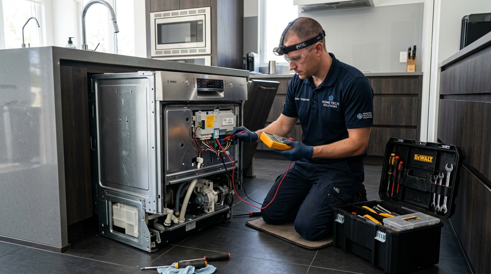

Bosch, üstün Alman mühendisliği, yüksek enerji tasarrufu ve akıllı ev teknolojileri ile dünya genelinde kalite anlayışını temsil eden öncü markalardandır. Evlerimizde günlük yaşam standardımızı yükselten buzdolabı, çamaşır makinesi, bulaşık makinesi, kurutma makinesi ve iklimlendirme sistemleri, uzun yıllar sorunsuz çalışmak üzere tasarlanmıştır.
Ancak en kaliteli ve en dayanıklı cihazlar dahi sürekli kullanım, şebeke voltajındaki dalgalanmalar, su kireçlenmesi veya zamana bağlı parça aşınmaları nedeniyle teknik arızalar gösterebilir. Böylesine hassas ve yüksek teknolojiye sahip cihazlarda yapılacak bilinçsiz müdahaleler, ürünün ömrünü ciddi oranda kısaltabilir.
Bölgede yıllardır güvenin ve profesyonelliğin simgesi olan Sertler Soğutma, arızalanan ya da bakıma ihtiyaç duyan tüm Bosch ürünleriniz için anında ve garantili çözümler sunmaktadır. Tarsus Bosch Servisi kulvarındaki derin tecrübemiz ve uzman teknik kadromuzla, cihazlarınızı fabrikadan çıktığı ilk günkü çalışma verimine kavuşturmak temel hedefimizdir.
Evlerimizde temel ihtiyaçları karşılayan beyaz eşyaların ansızın durması veya işlevini kaybetmesi günlük düzeni büyük ölçüde aksatır. Yiyeceklerin bozulma tehlikesiyle karşı karşıya kaldığı bir buzdolabı arızası veya biriken çamaşırlar aile bireyleri için ciddi bir stres kaynağına dönüşebilir.
İşte tam bu noktada Sertler Soğutma, gelişmiş araç filosu ve uzman teknisyen kadrosu ile hızlıca müdahale eder. Tarsus Bosch Servisi taleplerinize aynı gün içerisinde dönüş sağlayarak adresinize ulaşıyor ve yaşadığınız aksaklığı yerinde çözüyoruz.
Bosch markasının sahip olduğu VarioInverter motorlar, EcoSilence Drive sistemleri ve hassas sensör ağları kendine özgü bir teknik yapı gerektirir. Standart tamir yöntemleri bu gelişmiş cihazlarda yetersiz kalabileceği gibi cihazın kart ve motor sistemine zarar verebilir.
Sertler Soğutma personeli, Bosch ev aletlerinin tüm modelleri ve teknik şemaları üzerinde uzmanlaşmış eğitimli kişilerden oluşur. Tarsus Bosch Servisi hizmetlerimizde en güncel arıza tespit cihazlarını kullanarak sorunun ana kaynağını noktasal olarak saptıyor ve nokta atışı müdahalelerde bulunuyoruz.
Şeffaf hizmet yaklaşımımız gereği, işlem öncesinde cihazın mevcut durumu ve yapılması gereken teknik uygulamalar hakkında müşterilerimizi açık bir dille bilgilendiriyoruz. Onayınız alınmadan hiçbir onarım veya parça değişimi işlemi başlatılmaz.
Tarsus genelinde sunduğumuz yüksek standartlı servis anlayışımız, firmamızı sektörde en çok tavsiye edilen isim haline getirmiştir. Tarsus Bosch Servisi ihtiyaçlarınızda Sertler Soğutma güvencesini tercih ederek Bosch kalitesini sorunsuz şekilde deneyimlemeye devam edebilirsiniz.
Cihazlarınızın performansını artırmak, enerji verimliliğini korumak ve ömrünü maksimum seviyeye çıkarmak için 7/24 hizmetinizdeyiz. Sertler Soğutma kalitesiyle Bosch teknolojisi evlerinizde daima maksimum verimle çalışmaya devam eder.
Tarsus Bosch Servisi İle Güvenli Kullanım
Bosch ev aletleri, yüksek teknolojili elektronik kartlar ve güçlü mekanik parçalarla donatılmıştır. Bu cihazların tamir ve bakım süreçlerinde elektrik ve su emniyetinin en üst düzeyde tutulması güvenli kullanımın ilk şartıdır. Tarsus Bosch Servisi alanındaki uzmanlığıyla öne çıkan Sertler Soğutma, gerçekleştirdiği tüm işlemlerde uluslararası güvenlik standartlarını titizlikle uygular.
Güvenli kullanım, sadece cihazın çalışır hale getirilmesi demek değildir. Onarım sonrasında cihazın elektrik kaçağı riski taşımaması, su bağlantılarında sızıntı yapmaması ve yüksek akım çekmemesi gerekir. Sertler Soğutma teknisyenleri, Tarsus Bosch Servisi hizmetlerinde tüm bu emniyet parametrelerini dijital ölçü aletleriyle tek tek kontrol eder.
Cihazlarınızın evinizde ve iş yerinizde güvenle kullanılmasını sağlamak adına şu adımları eksiksiz şekilde takip ediyoruz:
- Cihazın şebeke topraklama hattının ve elektrik kablo izolasyonlarının test edilmesi.
- Su giriş ve tahliye hortumlarının basınç dayanımlarının incelenerek sızdırmazlığının teyit edilmesi.
- Kapı emniyet kilitlerinin ve ısı emniyet termostatlarının çalışma değerlerinin kontrolü.
- Elektronik kart üzerindeki yüksek voltaj koruma rölelerinin test edilmesi.
- Hareketli mekanik aksamların ve tambur dengelerinin güvenli seviyeye getirilmesi.
Sertler Soğutma, Bosch cihazlarınızın kullanımında güvenlik riski oluşturabilecek en ufak bir detayı bile gözden kaçırmaz. Tarsus Bosch Servisi uygulamalarımız sayesinde aileniz ve eviniz olası elektrik kazaları veya su baskını risklerine karşı tam koruma altına alınır.
Bölgede yıllardır güvenilirliğiyle tanınan Sertler Soğutma, uzman kadrosuyla Bosch teknolojisini güvenle kullanmanızı sağlar. Tarsus Bosch Servisi ihtiyacınız olduğunda güvenli ve profesyonel teknik destek almak için dilediğiniz an bizimle iletişime geçebilirsiniz.
Sertler Soğutma Bosch Tamir ve Bakım Desteği
Bosch beyaz eşyalarının ve iklimlendirme sistemlerinin düzenli bakımdan geçmesi ve olası arızalarında uzmanlarca tamir edilmesi cihazın performansını doğrudan etkiler. Sertler Soğutma, Bosch ürün yelpazesinde yer alan tüm modeller için kapsamlı bir tamir ve bakım desteği sunmaktadır. Tarsus Bosch Servisi taleplerinizde donanımlı araçlarımız ve uzman teknisyenlerimizle adrese hızlıca ulaşıyoruz. Alman teknolojisine sahip dayanıklı ev aletlerinizde ise güvenilir Adapazarı Bosch servisi ayrıcalıklarından yararlanarak arızaları erkenden önleyebilirsiniz.
Bosch buzdolaplarında sıklıkla karşılaşılan soğutmama, terleme yapma veya fan motoru gürültüsü gibi problemler Sertler Soğutma tecrübesiyle kısa sürede giderilir. Tarsus Bosch Servisi ekibimiz, VitaFresh tazelik sistemlerinden No-Frost hava dolaşım kanallarına kadar tüm aksamları titizlikle kontrol eder. Gıdalarınızın bozulmaması için soğutma grubu arızalarına acil kodla müdahale edilmektedir.
Çamaşır ve bulaşık makinelerinde meydana gelen sarsıntı, yüksek ses veya su tahliye problemleri de kalıcı metodlarla giderilmektedir. Sertler Soğutma uzmanlığıyla gerçekleştirilen Bosch cihaz onarımlarında şu işlemler başarıyla uygulanır:
- VarioDrum kazan rulman (bilya) değişimleri ve kazan tamiri uygulamaları.
- Tahliye pompası, su giriş ventili ve emniyet kilidi yenilemeleri.
- EcoSilence Drive motor sürücü kartı onarımı ve kalibrasyonu.
- Dosing (otomatik deterjan) sistemlerinin ve fıskiye kanallarının temizliği.
- Amortisör ve süspansiyon sistemlerinin yenilenerek sarsıntının önlenmesi.
Ayrıca Bosch kurutma makineleri ve fırınları da Sertler Soğutma firmamızın uzmanlık alanına girmektedir. Kurutma makinelerindeki ısı pompası bakımları ve fırınlardaki rezistans yenilemeleri Tarsus Bosch Servisi güvencemizle gerçekleştirilir.
Bosch ev aletlerinizin ömrünü uzatmak ve ilk günkü verimle çalışmasını sağlamak için Sertler Soğutma teknik desteğine güvenebilirsiniz. Tarsus Bosch Servisi çağrı merkezimizi arayarak profesyonel servis kaydınızı anında oluşturabilirsiniz.
Tarsus Bosch Servisi Orijinal Parça Garantisi
Bosch Cihazınız İçin Hemen Randevu Alın
Orijinal yedek parça ve 1 yıl servis garantisiyle Tarsus genelinde aynı gün adresinizdeyiz.
Bosch cihazların uzun ömürlü ve yüksek performanslı olmasının temel nedeni, üretiminde kullanılan yüksek kaliteli parçalardır. Arıza durumunda kalitesiz veya yan sanayi parçaların kullanılması cihazın çalışma dengesini bozar ve daha büyük arızalara yol açar. Sertler Soğutma, Tarsus Bosch Servisi kapsamında gerçekleştirdiği tüm parça değişimlerinde sadece tam uyumlu orijinal yedek parçalar kullanmaktadır.
Orijinal parça kullanımı, cihazınızın fabrika çıkışındaki enerji verimliliğini, sessiz çalışma özelliğini ve yüksek performansını korumasını sağlar. Sertler Soğutma güvencesiyle takılan her orijinal yedek parça ve uygulanan işçilik 1 yıl süreyle resmi garantimiz altındadır. Tarsus Bosch Servisi kalitemiz ile cihazlarınızı merdiven altı tamircilerin yarattığı risklerden koruyoruz.
Yan sanayi parçaların kullanılması durumunda karşılaşılabilecek başlıca olumsuzluklar şunlardır:
- Cihazın ana kartında yüksek voltaj çekimine bağlı yanmalar oluşturabilir.
- Çalışma sesini artırarak balans bozukluğuna ve titreşime neden olur.
- Enerji tüketimini ciddi oranda artırarak elektrik faturalarını kabartır.
- Kısa süre içerisinde tekrar bozularak ek tamir masrafları çıkarır.
Sertler Soğutma, parça değişimi yapılan her Tarsus Bosch Servisi işlemi sonrasında müşterilerine detaylı servis formu ve garanti belgesi takdim eder. Değiştirilen arızalı eski parça müşteriye gösterilerek süreç tam bir şeffaflıkla yönetilir.
Stoklarımızda Bosch marka buzdolabı, çamaşır makinesi, bulaşık makinesi ve klimalara ait orijinal motorlar, pompalar, kartlar ve sensörler sürekli mevcut tutulmaktadır. Tarsus Bosch Servisi tercihinizi Sertler Soğutma yönünde kullanarak cihazlarınızın orijinal yapısını koruyabilirsiniz.
Sertler Soğutma Bosch Arıza Tespiti
Bir cihazdaki arızanın kalıcı ve doğru şekilde giderilebilmesi için ilk ve en kritik adım doğru arıza tespitidir. Hatalı teşhisler gereksiz parça değişimlerine ve müşteriler için yüksek maliyetlere sebep olur. Sertler Soğutma uzmanları, Tarsus Bosch Servisi süreçlerinde modern teşhis araçları ve bilgisayarlı arıza analiz sistemleri kullanır. İskandinav mühendisliği iklimlendirme ve beyaz eşya çözümleri için profesyonel bir Hatay Electrolux servisi desteğine başvurabilirsiniz.
Bosch cihazlar, herhangi bir aksaklık durumunda dijital ekranlarında özel arıza kodları gösterir veya LED ışık kombinasyonları ile ikaz verir. Sertler Soğutma ekibimiz, bu kodların arkasındaki gerçek teknik sebebi bulmak için derinlemesine inceleme yapar:
- Bosch Çamaşır Makinesi Hata Kodları: E16/F16 (Kapak kilitlenmedi), E18/F18 (Tahliye süresi aşıldı/pompa tıkalı), E23/F23 (Su sızıntısı emniyeti aktif), E32/F32 (Dengesiz yük hatası).
- Bosch Bulaşık Makinesi Hata Kodları: E09 (Isıtma rezistansı/ısı pompası arızası), E15 (Alt tabanda su sızıntısı var), E22 (Filtre tıkalı), E24 (Tahliye hortumu tıkalı/bükülmüş).
- Bosch Buzdolabı Hata Kodları: E01 (Dondurucu sensör arızası), E02 (Soğutucu sensör arızası), E10 (Elektronik kart modül hatası).
Tarsus Bosch Servisi ekibimiz, sadece ekrandaki koda bağlı kalmaz; cihazın amperi, voltajı, su basıncı ve sensör dirençlerini de dijital multimetrelerle ölçer. Sertler Soğutma uzmanı, arızanın gerçek kaynağını bulmadan parça değişimi adımı atmaz.
Arızanın kaynağı netleştirildikten sonra müşteriye detaylı bir arıza raporu ve maliyet tablosu sunulur. Sertler Soğutma, doğru teşhis sayesinde zaman ve kaynak israfını önler. Tarsus Bosch Servisi uzmanlığımızla cihazınızın sorununu ilk seferde doğru tespit ediyor ve çözüyoruz.
Tarsus Bosch Servisi Uzman Teknik Personeli
Bir teknik servisin sunduğu hizmetin kalitesini doğrudan belirleyen unsur sahadaki personelin bilgisi, tecrübesi ve uzmanlığıdır. Sertler Soğutma, Bosch teknolojisine tam anlamıyla hakim, sertifikalı ve eğitimli teknisyenlerden oluşan geniş bir kadroya sahiptir. Tarsus Bosch Servisi hizmetlerimizi bu nitelikli ekibimizle gururla sunuyoruz.
Teknik personelimiz, Bosch markasının düzenli olarak güncellediği yeni nesil ürün teknolojileri ve akıllı ev sistemleri üzerine sürekli eğitimler almaktadır. Gelişen teknolojiye tam uyum sağlayan ekibimiz, en karmaşık elektronik kart ve inverter motor arızalarını bile pratik bir şekilde çözebilmektedir.
- Sadece teknik bilgi değil, aynı zamanda müşteri ilişkileri ve çalışma etiği hususunda da eğitilen Sertler Soğutma personellerinin öne çıkan özellikleri şunlardır:
- Hijyenik Çalışma: Evinize konuk olan teknisyenlerimiz galoş ve koruyucu ekipman kullanarak çalışır.
- Şeffaf İletişim: Arızanın nedeni ve yapılacak işlemler anlaşılır bir dille müşteriye aktarılır.
- Temiz İşçilik: Onarım ve bakım esnasında çalışma alanı temiz tutulur, işlem sonrası derli toplu teslim edilir.
- Güler Yüz ve Saygı: Müşteri konforu ve memnuniyeti tüm çalışanlarımız için temel ilkedir.
Sertler Soğutma, Tarsus Bosch Servisi süreçlerinde amatör veya deneme-yanılma yoluyla yapılan müdahalelere asla izin vermez. Cihazınızın fabrika montaj standartlarına uygun olarak tamir edilmesi sağlanır.
Bosch ev aletlerinizi güvenebileceğiniz, işinin ehli ve tecrübeli ellere teslim etmek istiyorsanız doğru adrestesiniz. Sertler Soğutma uzman kadrosuyla Tarsus Bosch Servisi taleplerinizi karşılamaya her an hazırdır.
Sertler Soğutma Bosch Soğutma ve Yıkama Arızaları
Buzdolapları gıdalarımızın tazeliğini korurken, çamaşır ve bulaşık makineleri hijyenik yaşam standartlarımızı muhafaza eder. Bu cihazlarda meydana gelen arızalar evdeki tüm düzeni altüst edebilir. Sertler Soğutma, Bosch soğutma ve yıkama grubu cihazlarındaki tüm arızaları Tarsus'taki en tecrübeli ekiple çözmektedir. Tarsus Bosch Servisi kapsamında her iki ürün grubuna özel onarım protokolleri uyguluyoruz.
Soğutma grubunda yer alan Bosch buzdolaplarında kompresör kilitlenmesi, gaz kaçağı, fan motoru durması ve defrost sistemi bozulmaları en sık görülen arızalardır. Sertler Soğutma teknisyenleri, cihazın dondurucu ve soğutucu bölmelerindeki sıcaklık dengesini dijital termometrelerle ölçerek soğutma arızalarını adreste hızlıca giderir.
Yıkama grubundaki Bosch çamaşır ve bulaşık makinelerinde ise şu arızalara profesyonel çözümler üretilmektedir:
- Çamaşır Makinesi Sıkma Yapmıyor veya Sarsıntılı Çalışıyor: Amortisör yıpranmaları, kazan bilya dağılması veya motor sürücü kart arızaları yenileriyle değiştirilerek çözülür.
- Bulaşık Makinesi Suyu Isıtmıyor (E09 Hatası): Bosch bulaşık makinelerinde sıkça görülen entegre ısı pompalı rezistans arızası Sertler Soğutma garantisiyle yenilenir.
- Cihaz Su Almıyor veya Boşaltmıyor: Su giriş ventili, emniyet şamandırası ve tahliye pompaları kontrol edilerek tıkalı veya bozuk aksamlar değiştirilir.
- Kazan Körük Lastiği Yırtık: Çamaşır makinesi ön kapağından su sızdıran yırtık körük lastikleri orijinal parçalarla yenilenir.
Sertler Soğutma, soğutma ve yıkama grubu cihazlarınızın ilk günkü çalışma verimine dönmesini garanti eder. Tarsus Bosch Servisi uzmanlığımızla cihazlarınızın bakım ve onarımlarını güvenle yaptırabilirsiniz.
Bütçe Dostu Tarsus Bosch Servisi Fiyatları
Teknik servis ihtiyacı doğduğunda kullanıcıların en çok önem verdiği konulardan biri de sunulan fiyatların makul ve adil olmasıdır. Kaliteli hizmetin yüksek maliyetli olması gerekmediğine inanıyoruz. Sertler Soğutma, Tarsus ve çevresinde yürüttüğü Tarsus Bosch Servisi hizmetlerinde bütçe dostu, adil ve şeffaf bir fiyat politikası benimsemektedir. Gelişmiş hijyen programlarına sahip ev aletleriniz için ise garantili Adapazarı Hotpoint servisi hizmetlerini tercih edebilirsiniz.
Firmamızda sürpriz giderler veya onaylanmamış maliyet kalemleri kesinlikle yer almaz. Onarım öncesinde Sertler Soğutma teknisyenleri cihazınızı inceler, değişmesi gereken parçaları ve yapılacak işçiliği belirleyerek detaylı bir maliyet bilgisi sunar. Siz onay vermediğiniz sürece hiçbir ücretli işlem başlatılmaz.
Bütçe dostu fiyat politikamızın temel ilkeleri şunlardır:
- Doğru Teşhis ile Tasarruf: Arızasız parçaların değiştirilmesinin önüne geçilerek gereksiz masraf yapmanız engellenir.
- Orijinal Parça / Uygun Maliyet: Bosch orijinal yedek parçaları doğrudan tedarik kanallarımız sayesinde avantajlı koşullarla sunulur.
- Şeffaf İşçilik Tarifesi: Yapılan her bir işlemin işçilik maliyeti müşteriye açıkça izah edilir.
- Garantili İşçilik: Tamir edilen parçalar garanti kapsamında olduğu için aynı arızanın tekrarlanması durumunda ek ücret ödemezsiniz.
Servis bedelimiz, adresinize gelen ekibin yaptığı detaylı arıza tespiti ve yol harcamalarını kapsar. Tamir hizmetini onaylamanız durumunda bu tespit ücreti toplam maliyetten düşülmektedir.
Ödemelerinizi kolaylaştırmak adına kapıda nakit veya mobil POS cihazlarımız vasıtasıyla tüm kredi kartlarına güvenli ödeme imkânı sunuyoruz. Sertler Soğutma, ekonomik ve dürüst Tarsus Bosch Servisi çözümleriyle her zaman yanınızdadır.
Sertler Soğutma Bosch Motor Tamiri
Bir beyaz eşyanın en pahalı ve kritik bileşeni motor ünitesidir. Bosch cihazlarda kullanılan VarioInverter ve EcoSilence Drive motorlar yüksek verimlilik ve sessizlik sunar. Ancak voltaj dalgalanmaları, aşırı yüklenme veya rulman yıpranmaları nedeniyle bu motorlarda arızalar meydana gelebilir. Sertler Soğutma, Bosch motor tamiri ve değişiminde Tarsus'taki en donanımlı servistir.
Sıradan tamirciler motor arızasıyla karşılaştıklarında doğrudan yüksek maliyetli sıfır motor değişimi önerir. Ancak Sertler Soğutma uzmanları, motorun tamir edilebilirliğini detaylıca inceler. Motor kömürlerinin yenilenmesi, rulman değişimi veya sürücü kartı üzerindeki lehim yenilemeleri ile motorlar çok daha uygun maliyetlerle kurtarılabilmektedir.
- Tarsus Bosch Servisi ekibimiz tarafından gerçekleştirilen motor tamir süreçleri şu adımlarla ilerler:
- Motorun sargı dirençleri ve takometre değerleri dijital cihazlarla ölçülür.
- Aşınmış motor bilyaları ve kömürleri orijinal parçalarla değiştirilir.
- Inverter motor sürücü kartı üzerindeki yanmış kondansatör ve triyaklar tamir edilir.
- Tamiri tamamlanan motor tezgahta teste tabi tutularak devir ve ses kontrolleri yapılır.
Motorun tamir edilemeyecek kadar ağır hasar gördüğü durumlarda ise Bosch orijinal sıfır motor montajı gerçekleştirilir. Sertler Soğutma yapılan tüm motor tamir ve değişim işlemlerine 1 yıl resmi garanti vermektedir.
Cihazınızın motoru çalışmıyor, dururken yüksek gürültü çıkarıyor veya tık tık ses yapıp duruyorsa Tarsus Bosch Servisi çağrı merkezimizi arayabilirsiniz. Sertler Soğutma motor sorunlarınızı kalıcı ve ekonomik şekilde çözer.
Tarsus Bosch Servisi Randevusu Nasıl Alınır?
Arızalanan veya bakıma ihtiyaç duyan Bosch cihazlarınız için profesyonel teknik servis desteği almanın en hızlı yolu pratik bir randevu süreci oluşturmaktır. Sertler Soğutma, müşterilerinin günlük işlerini aksatmadan kolayca servis randevusu alabilmesi için esnek ve hızlı bir randevu sistemi sunmaktadır. Tarsus Bosch Servisi taleplerinizde bürokratik engellerle uğraşmadan dakikalar içinde kaydınızı tamamlayabilirsiniz. Bütçe dostu pratik ev teknolojilerinizde oluşabilecek aksaklıklarda deneyimli bir Adapazarı İndesit servisi firmasından yardım alabilirsiniz.
Randevu oluşturma sürecimiz son derece basit adımlardan oluşmaktadır:
- İletişim Kanallarımızdan Ulaşın: Çağrı merkezimizi arayabilir, WhatsApp destek hattımızdan mesaj atabilir veya web sitemizdeki online randevu formunu doldurabilirsiniz.
- Cihaz ve Arıza Bilgisini Paylaşın: Müşteri temsilcimize Bosch cihazınızın türünü (buzdolabı, çamaşır makinesi vb.) ve gösterdiği arıza belirtilerini iletin.
- Uygun Gün ve Saati Seçin: Ekibimizin adresinizi ziyaret etmesini istediğiniz gün ve saat dilimini belirleyin.
- Mobil Ekip Yönlendirmesi: Seçtiğiniz zaman dilimi için adresinize en yakın Tarsus Bosch Servisi mobil ekibimiz görevlendirilir.
Sertler Soğutma, randevu saatlerine tam riayet etme konusunda Tarsus'un en disiplinli firmalarından biridir. Müşterilerimizin saatlerce evde servis beklemesinin önüne geçiyoruz. Teknisyenlerimiz adrese gelmeden yaklaşık 20-30 dakika önce sizi arayarak yolda olduklarını teyit eder.
Çalışan müşterilerimiz için mesai saatleri sonrasına veya hafta sonu günlerine özel servis randevu dilimleri de sunulmaktadır. Randevu saatinde herhangi bir değişiklik yapmanız gerektiğinde çağrı merkezimizi arayarak kaydınızı kolayca güncelleyebilirsiniz.
Sertler Soğutma ile çalışarak zamanınızı boşa harcamadan kaliteli bir servis tecrübesi yaşayabilirsiniz. Tarsus Bosch Servisi randevunuzu oluşturmak için iletişim kanallarımızı 7/24 güvenle kullanabilirsiniz.
Sertler Soğutma Bosch Bakım Ve Onarım Tüyoları
Bosch cihazlarınızın arızalanma riskini en aza indirmek, enerji tüketimini düşürmek ve ömrünü uzatmak için günlük kullanımda dikkat edebileceğiniz bazı basit ama etkili bakım tüyoları bulunmaktadır. Sertler Soğutma olarak kullanıcılarımızın bilinçlenmesini önemsiyor ve Tarsus Bosch Servisi uzmanlarımızın hazırladığı bakım tüyolarını sizlerle paylaşıyoruz.
Cihazlarınızın performansını korumak için uygulayabileceğiniz başlıca pratik tüyolar şunlardır:
- Bosch Buzdolabı İçin: Buzdolabının arka kısmındaki kondanser (tozluk) radyatörünü yılda en az bir kez elektrikli süpürgeyle tozdan arındırın. Cihazın duvarla arasında en az 10 cm hava sirkülasyon mesafesi bırakın.
- Bosch Çamaşır Makinesi İçin: Deterjan çekmecesini ve alt kısımdaki tahliye pompasını 2-3 ayda bir temizleyin. Makine kapağını yıkama bittikten sonra bir süre açık bırakarak kazan içinde küf ve kötü koku oluşumunu engelleyin. Aşırı deterjan kullanımından kaçının.
- Bosch Bulaşık Makinesi İçin: Taban kısmında bulunan ana süzgeç filtresini haftada bir sıcak su altında yıkayın. Fıskiye deliklerinin kireçle tıkanmamasına dikkat edin ve ayda bir makine temizleyici ürünlerle boş yıkama yapın.
- Bosch Kurutma Makinesi İçin: Her kurutma işleminden sonra tiftik ve hav filtresini mutlaka temizleyin. Isı pompası filtresini ayda bir nemli bezle silin.
Bu pratik tüyolar cihazlarınızın basit nedenlerle bozulmasını engeller. Ancak elektriksel ve mekanik derin arızalarla karşılaştığınızda cihazın içini açmadan doğrudan profesyonel teknik destek almanız gerekir.
Sertler Soğutma, Bosch cihazlarınızda meydana gelen tüm teknik problemlerde uzman kadrosuyla yanınızdadır. Tarsus Bosch Servisi ekibimizi çağırarak cihazlarınızın derinlemesine bakım ve onarımını yaptırabilirsiniz.
Tarsus Bosch Servisi Hizmet Bölgelerimiz
Tarsus, geniş coğrafi yapısı ve kalabalık nüfusuyla büyük bir yerleşim alanıdır. Teknik servis hizmetinin başarısı, kentin her noktasına aynı hız ve kalitede ulaşabilmekle ölçülür. Sertler Soğutma, Tarsus'un tüm merkez ve çevre mahallelerine yayılmış mobil araç filosuyla eksiksiz bir hizmet ağı sunmaktadır. Tarsus Bosch Servisi arayışınızda bulunduğunuz konum ne olursa olsun kapınıza kadar geliyoruz.
Hizmet sunduğumuz başlıca Tarsus mahalleleri ve bölgeleri şunlardır:
Anıt Mahallesi, Atatürk Mahallesi, Barbaros Mahallesi, Beydeğirmeni Mahallesi, Fatih Mahallesi, Gazipaşa Mahallesi, Gözlükule Mahallesi, İsmetpaşa Mahallesi, Kavaklı Mahallesi, Kırklarsırtı Mahallesi, Mithatpaşa Mahallesi, Reşadiye Mahallesi, Şehitlertepesi Mahallesi, Tekke Mahallesi, Yeşilyurt Mahallesi ve Yunus Emre Mahallesi.
Sadece kent merkeziyle sınırlı kalmıyoruz; Tarsus'a bağlı belde, köy ve sanayi bölgelerine de mobil ekiplerimizle kesintisiz Tarsus Bosch Servisi desteği ulaştırıyoruz. Adrese yönlendirilen gezici araçlarımız navigasyon altyapısı sayesinde adresinizi kolayca bulur.
Sertler Soğutma, Tarsus'un neresinde olursanız olun mesafe farkı gözetmeksizin aynı gün servis garantisi sunar. Mobil araçlarımızda bulunan orijinal parçalar ve teknik teçhizat sayesinde arızalarınız yerinde giderilir.
Kent genelinde kurduğumuz bu güçlü ulaşım ağı sayesinde Bosch cihazlarınız arızalandığında günlerce beklemek zorunda kalmazsınız. Tarsus Bosch Servisi mobil ekiplerimizi arayarak adresinize hızlıca teknik servis çağırabilirsiniz.
Sertler Soğutma Bosch Yıllık Kontrol Programı
Bosch beyaz eşya ve iklimlendirme cihazlarının arızalanmasını tamamen engellemenin en etkili yolu yıllık koruyucu kontrol programlarına katılmaktır. Arıza meydana gelmeden önce yapılan teknik incelemeler, aşınmış parçaların tespiti ve temizlik işlemleri cihazı olası büyük arızalardan korur. Sertler Soğutma, Bosch cihazlar için özel Yıllık Kontrol Programı uygulamaktadır.
Yıllık kontrol programımız kapsamında Tarsus Bosch Servisi teknisyenlerimiz adresinizi ziyaret ederek cihazlarınızı baştan sona check-up işleminden geçirir. Program dahilinde gerçekleştirilen temel incelemeler şunlardır:
- Elektriksel Güvenlik Testi: Voltaj çekimleri, şase kaçakları ve kart soket bağlantılarının incelenmesi.
- Mekanik Aşınma Kontrolü: Motor rulmanları, amortisörler, kayışlar ve pompa pervanelerinin durumu.
- Sızdırmazlık ve Basınç Testi: Su giriş ve tahliye boruları, kapı contaları ve soğutucu gaz basınç ölçümleri.
- Hijyenik Derin Temizlik: Kondanser temizliği, fıskiye dezenfeksiyonu ve filtre arındırma işlemleri.
Sertler Soğutma Yıllık Kontrol Programı'na dahil olan müşterilerimiz, cihazlarının enerji tüketimini %20'ye varan oranlarda düşürmekte ve cihaz ömrünü yıllarca uzatmaktadır. Ayrıca program kapsamındaki kullanıcılarımız olası arıza durumlarında öncelikli mobil servis hakkı kazanır.
Bosch ev aletlerinizin daima ilk günkü performansında çalışmasını istiyorsanız koruyucu bakımın gücünden yararlanmalısınız. Sertler Soğutma Yıllık Kontrol Programı hakkında bilgi almak ve kaydolmak için Tarsus Bosch Servisi çağrı merkezimizi hemen arayabilirsiniz.
Sıkça Sorulan Sorular (S.S.S.)
Sertler Soğutma olarak Tarsus genelinde konuşlanmış mobil servis araçlarımız bulunmaktadır. Çağrı kaydınız alındıktan sonra bölgesel yoğunluğa bağlı olarak genellikle aynı gün içerisinde, belirteceğiniz saat diliminde adresinizde oluyoruz.
Evet. Sertler Soğutma bünyesinde gerçekleştirilen tüm yedek parça değişimleri ve işçilik uygulamaları 1 yıl süreyle firmamızın resmi garantisi altındadır. Garanti süresi boyunca değiştirilen parçada oluşabilecek teknik aksaklıklar ücretsiz giderilir.
E18 hatası su tahliye süresinin aşıldığını veya tahliye pompasının tıkalı olduğunu gösterir. Makinenin fişini çektikten sonra alt sağ kısımdaki pompa kapağını açarak filtreyi temizleyebilirsiniz. Sorun devam ederse Tarsus Bosch Servisi ekibimizi çağırabilirsiniz.
E09 hatası ısıtma rezistansının veya ısı pompasının arızalandığını gösterir. Bosch bulaşık makinelerinde sıkça görülen bu durum Sertler Soğutma teknisyenlerimiz tarafından orijinal ısı pompası değişimi yapılarak yerinde çözülür.
Evet. Sertler Soğutma, Bosch cihazlarınızın uzun ömürlü ve verimli çalışması adına işlemlerinde sadece tam uyumlu ve orijinal yedek parçalar kullanmaktadır. Yan sanayi parçalar firmamızca kesinlikle kullanılmaz.
Arızaların büyük bir kısmı (%90 oranında) mobil ekiplerimiz tarafından evinizde yerinde onarılmaktadır. Ancak ağır mekanik arızalar, test gerektiren kart tamirleri veya kazan değişimleri gibi durumlarda cihaz onayınız alınarak merkezimize götürülebilir.
Sertler Soğutma müşterilerine esnek ödeme kolaylıkları sağlar. Ödemelerinizi kapıda nakit olarak veya teknisyenlerimizde bulunan mobil POS cihazları aracılığıyla kredi kartı/banka kartı ile güvenle yapabilirsiniz.
Işıkların yanması cihaza elektrik geldiğini gösterir. Soğutmama sorunu genellikle kompresör (motor) arızasından, soğutucu gaz kaçağından, fan motoru kilitlenmesinden veya anakart arızasından kaynaklanır. Sertler Soğutma teknisyenlerimizin adreste dijital ölçüm yapması gerekir.
Evet. Sertler Soğutma, 7/24 kesintisiz hizmet anlayışıyla çalışmaktadır. Cumartesi, Pazar günleri ve resmi tatillerde nöbetçi Tarsus Bosch Servisi ekiplerimiz acil servis talepleriniz için görev başındadır.
Aşırı sarsıntı ve yürüme sorunu genellikle cihazın zemin dengesizliğinden, amortisörlerin yıpranmasından veya kazan denge ağırlıklarının gevşemesinden kaynaklanır. Sertler Soğutma teknisyenleri amortisör değişimi ve ayak ayarı ile sorunu çözer.
Adresinize gelen Tarsus Bosch Servisi ekibimizin yaptığı detaylı arıza tespiti sonrasında tamir işlemini onaylamazsanız, sadece standart arıza tespit ücreti ödersiniz. Tamir işlemini onaylamanız durumunda ise tespit ücreti toplam tutardan düşülür.
Buzdolabının altından su sızması genellikle iç kısımdaki defrost su tahliye kanalının tıkanmasından kaynaklanır. Erinen buz suları dışarıdaki buharlaşma kabına akamadığı için dolap içine ve dışına sızar. Sertler Soğutma ekiplerimiz kanalı özel cihazlarla açar.
Bosch cihazlarınızın yılda en az bir kez detaylı periyodik bakımdan geçirilmesi önerilir. Düzenli bakım hem cihaz ömrünü uzatır hem de yüksek elektrik ve su tüketiminin önüne geçerek bütçenizi korur.
Firmamız Tarsus merkezdeki tüm mahallelerin (Anıt, Atatürk, Şehitlertepesi, Yeşilyurt, Gazipaşa vb.) yanı sıra bağlı belde, köy ve yakın sanayi bölgelerine kadar geniş bir coğrafyada Tarsus Bosch Servisi mobil hizmeti sunmaktadır.
Sertler Soğutma telefon numaralarımızı arayarak, WhatsApp hattımızdan mesaj atarak veya web sitemizde bulunan online randevu formunu doldurarak anında Bosch servis kaydı oluşturabilirsiniz.